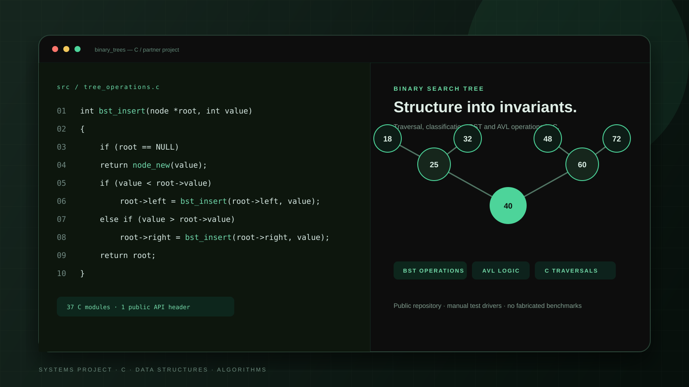

Systems · Algorithms
Binary Trees in C
A partner project that turns data-structure theory into working C through classification, traversal, binary search tree, and AVL operations.

Project overview
Learn the structure by implementing its rules.
Binary Trees in C is a partner project focused on the behavior and constraints of tree data structures. The codebase contains implementations for common binary-tree properties, traversal strategies, binary search tree operations, and AVL insertion and validation.
The project is structured as many small C modules around a shared header, which makes each operation understandable and testable in isolation while still building toward a complete tree API.
The problem
Tree algorithms are easy to imitate and difficult to internalize.
Reading about preorder, BST insertion, deletion, or balancing can create the illusion of understanding. The real difficulty is preserving the structure through edge cases: empty trees, duplicate values, root removal, and rebalancing after insertion.
The partner project therefore focused on implementing and exercising each operation rather than producing a polished application around it.
The users
A learning codebase for C students.
The immediate users are the project partners and other C learners who want to inspect concrete implementations of tree invariants. The public repository also helps reviewers understand the scope of the completed work without relying on a marketing description.
The solution
Small operations that compose into complete tree behavior.
- Node creation, deletion, and structural inspection.
- Preorder, inorder, postorder, and level-order traversal.
- Tree properties including leaf, root, full, perfect, and complete checks.
- Binary search tree insertion, search, removal, and validation.
- AVL balance checks, rotation helpers, and insertion logic.
- Manual test drivers that print and inspect concrete tree states.
Engineering
A small API makes correctness visible.
Modular source
The repository uses focused C files for individual operations and a shared header that defines the public tree interface. That structure keeps recursion and pointer manipulation isolated instead of concentrating them in a single large file.
Binary search invariants
BST operations preserve ordering on both sides of each node. Search follows the value relationship, insertion chooses the correct branch, and removal handles root, leaf, and one-child cases without discarding unrelated subtrees.
AVL behavior
AVL-related modules include validation, rotation helpers, and insertion logic. The public case study avoids claiming a complete heap implementation because the source files for that portion are not present in the inspected repository.
Testing boundary
The project includes a tests directory with manual drivers, but no Makefile or assertion-based test runner is present. The case study therefore describes the source honestly without presenting it as a continuously verified benchmark suite.
Challenges & decisions
Preserve correctness before optimizing.
- Represent tree relationships explicitly through node pointers rather than hidden state.
- Separate traversal and classification from mutation operations.
- Handle root removal as a distinct case because it changes the tree root.
- Use rotation helpers to make AVL intent visible in insertion logic.
- Leave unsupported claims out when source files or test infrastructure are incomplete.
The project favors inspectable implementations and honest scope over benchmark numbers that the repository cannot substantiate.
Results
A public, inspectable record of applied data-structure work.
The public repository contains 37 C source files, a shared API header, and a tests directory with manual drivers covering tree operations, traversals, BST behavior, and AVL-related logic.
The repository does not include an automated build, assertion suite, benchmark, or measured runtime result. Those are useful next steps, but they are not presented as completed work.
Technology
Techniques and tools used.
- C
- Recursion
- Pointer-based data structures
- Binary Trees
- Binary Search Trees
- AVL Trees
- Manual Testing
- Git
Links
Explore the source.
The project has a verified public repository. There is no separate deployed demo or performance report.